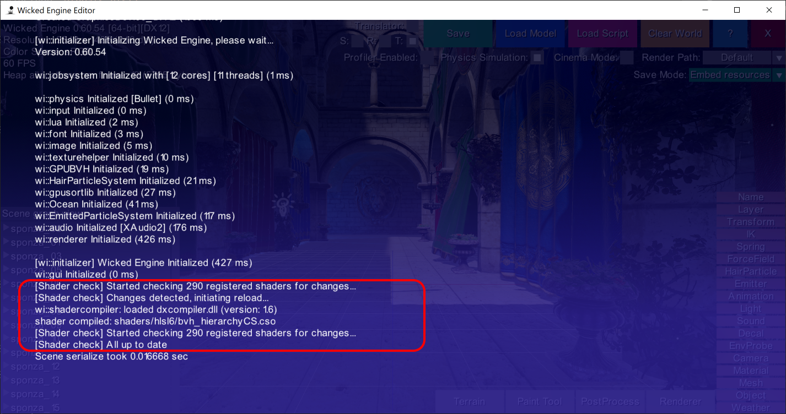
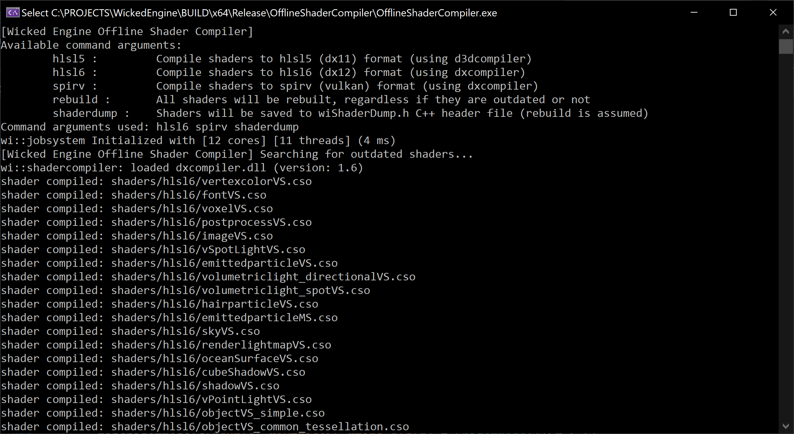
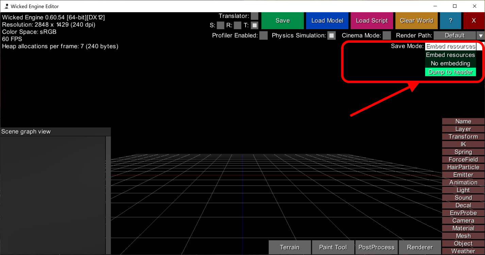
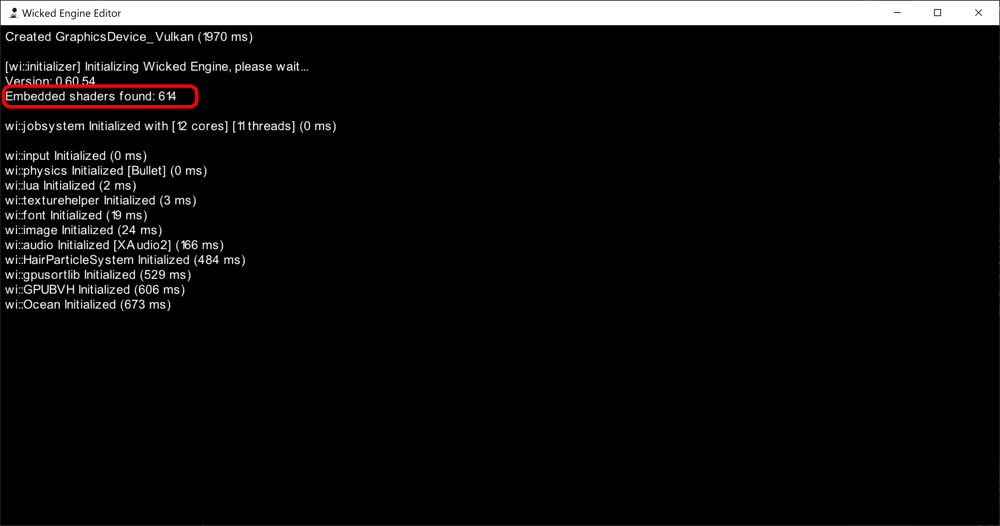

Shader compiler tools
Wicked Engine used Visual Studio to compile all its shaders for a long time, but that changed around a year ago (in 2021) when custom shader compiling tools were implemented. This blog highlights the benefits of this and may provide some new ideas if you are developing graphics programs or tools.
Previously
First, the old system used Visual Studio’s built in shader compiler, which is good if you want to start out. On the Linux side, the CMake system was used to build shaders in a different way by calling the shader compiler executable with command line arguments. The CMake side was problematic because it was not able to detect which shader files need to be rebuilt, for example when their included dependencies changed, so they were always rebuilt from scratch. Visual Studio could detect this, but it only worked well with the old “FXC” compiler (up to shader model 5.1). You could switch to shader model 6.0 and up and “DXC” (DirectX ShaderCompiler), but then it didn’t support multiprocessor compilation for some reason, and there wasn’t any indication it would be fixed (I tried reporting [here], but nothing useful happened). Even if these problems wouldn’t have existed, there are multiple other benefits of the new custom shader compiler tools.
Design
Wicked Engine uses the HLSL language to write shaders. It doesn’t use any added frameworks on top of HLSL, so that the shaders of this engine can be understood by anyone coming from outside and copied/reused with the least effort. (If you looked at the shaders before, you might have noticed the overuse of some custom resource declaration macros, but now that is also a thing of the past) HLSL is also compiled to Vulkan easily by the DirectX ShaderCompiler (also available on Linux). This also means, that you can still use the Visual Studio’s shader compiler for your own shaders if you want to – or your preferred compiler for that matter. But now you can also use an unified shader compiler interface that can be called the same way from Linux and Windows as well. So the first and most important benefit is sharing the same shader compilation process between different operating systems. By the way, this interface is accessible from the wi::shadercompiler:: namespace after including the wiShaderCompiler.h file (included by default if you use the WickedEngine.h header).
Runtime compilation
The next useful thing is that you can easily call shader compilation tasks at application’s runtime. You can also use the engine’s job system easily to offload the compilation to all CPU cores. The shader compiler will only be initialized once, when you first want to compile something. This is also better than calling the “fxc.exe” or “dxc.exe” multiple times and loading that program for each shader file. The shader compiler loads the d3dcompiler.dll and/or the dxcompiler.dll (depending on which shader model you use) and uses their C++ API to do the compilation. One important note to mention is that the shader compiler’s DLL cannot be used in “UWP” application that will be put on the Windows Store, and since Wicked Engine is up there, there had to be a way to conditionally load the DLL and not be dependent on it. It’s also good that you don’t need to “ship” the compiler DLL to users of your application – however, if someone puts it next to the exe, it can still be utilized. This also means that DX12 rendering code must not depend on loading this DLL even if you just want shader reflection. Shader reflection could be useful to get knowledge of a shader’s used resources and for example make root signatures based on that. That was one way that needed to be changed in Wicked Engine – so now shaders will specify their root signatures inside the shader instead (or use a default one). This is also a better fit for gaming consoles, as the shader could be easily precompiled in one pass.
There are more benefits of runtime shader compilation. The Editor can now detect whenever a shader changed, and rebuild it immediately which is immensely useful and speeds up the shader iteration process significantly. Each time the Editor loses focus, and regains it, it will check for outdated shaders and spawn recompile tasks if needed. This detection process is fast enough that it is not detectable by the user. The rebuild process – if it needs to run – will currently block the application, this is definitely something to be improved in the future.
Detecting outdated shaders
So how does the detection for outdated shaders work? It’s not enough to check for file date differences between the compiled shader and shader source file if you think about it – since if you modify a shared header, you want to recompile all shaders that use that header as well. In these shader compiler APIs, there is such a thing called “include handler” which is something that you can override with your own functionality. While compiling a shader source file, it will fire a callback function each time the shader includes a file with the #include directive, in a recursive way (so includes within includes will be detected as well). But this is when you are already compiling the shader, not when you want to detect changes. The way I solve this problem currently is that – at shader compile time, each shader will collect all its include file names into a wi::unordered_set<string> (so each file name will be also unique). For every shader, after compilation, it will save out this information into a separate “.wishadermeta” metadata file that contains these dependencies. When the application wants to check for outdated shaders, it just loads these metadata files if they exist and determines whether any dependency is newer dated than the compiled shader (using the c++ filesystem API’s std::filesystem::last_write_time() function, conveniently). If any dependency is newer, it recompiles that shader. The metadata files are not necessary, you wouldn’t ship those in the final application, the shaders will be always enough by themselves (and that’s why they are separate files, so shaders remain simple shader bytecode blobs, trivially usable by the graphics API). If there are no metadata files found, the shader is detected as outdated if it doesn’t exist – and up to date if it does exist.

Permutations
The other benefit is that you can now programmatically compile shader permutations from within the engine/application code easily. This is not yet used in the engine, since all the few permutations that there are, were created manually in the Visual Studio shader compiler days. But the compiler interface now accepts shader compile options as parameters, for example #define macros. This will be the way forward when new permutations will need to be created.
Offline compilation
The next great benefit is the addition of an offline shader compiler tool. This is a simple console application that can use many of the engine’s functionality, such as job system and shader compiler for example. It can be used from the command line to compile all shaders with different settings – which are read from command arguments and can be mixed and matched. The command arguments currently are:
- hlsl5 : compile all shaders for DX11
- hlsl6 : compile all shaders for DX12
- spirv : compile all shaders for Vulkan
- rebuild : force rebuild all shaders
- shaderdump : after shader compilation, all the bytecodes will be written out to one C++ header file

Embedded shaders
Most options are self explanatory, the last one is more interesting. Once the shaders are written out to a combined header file, called wiShaderDump.h, the engine will detect that this new header file exists (with the C++ feature __has_include("wiShaderDump.h")) and can be rebuilt to use this, in which case all shaders will be embedded into the .exe file and not loaded from files at runtime (I recommend rebuild, because sometimes Visual Studio doesn’t recognize that this new header file was just created). This will cause slightly faster shader loading, but more importantly much easier to redistribute the application, because it will only need the single .exe file (not including other content). The original reason for this was the releasing the UWP Microsoft Store version of the Editor, because it was just a lot easier to package the application up this way. The engine also uses this binary data to C++ header conversion trick for other assets, such as a default font for example, but it can even load whole 3D scenes like this, so potentially everything can just be embedded into the exe (you can use the wi::helper::Bin2H() function for this). It could work well for small apps, but larger assets, the C++ compiler can break when parsing very large header files (at least in Visual Studio), something to keep in mind.

The embedded shaders will cause the executable size to increase. Without embedded shaders, currently it is ~8MB, but with all DX12 and Vulkan shaders embedded it is ~21MB. You could strip shader reflection and debug info too, if this is a problem.
It is important, that with embedded shaders, the outdated shader detection and recompile will not be working (at least for now), so it is only recommended to be used with final builds. If you update the engine, and there were shader changes, be sure to rebuild the shader dump too (or just delete it). For this, it’s not recommended to be used in development builds. When shader dump is used, it will be output on the initialization screen as well:

The builds that you can download from Github or Microsoft Store will use the embedded shaders feature. [Here] you can find example build scripts that build standalone applications with embedded shaders.
Usage
In practice, this interface is quite simple to use. Everything is contained in the wi::shadercompiler:: namespace. The Compile() function reads a CompilerInput structure and writes a CompilerOutput structure, I don’t think it requires any explanation. The few other functions are used for writing shader meta files and checking for outdated shaders, most likely those are not much concern for anyone else. This interface is completely separate from the DX12 and Vulkan rendering, so it can be used without any graphics initialization (for example on a command line program).
However, one point of intersection is that graphics devices for DX12 and Vulkan can report their expected shader formats. This information can be used to only compile shaders for one type of graphics API, for example the currently active one.
Error handling
If there are shader errors on compilation, errors will be posted to the error output on Visual Studio with filename and line numbers. This is possible by redirecting the resulting error messages to the std::cerr output stream. Double clicking on the error message sort of works too, Visual Studio will open the file in question and sometimes also navigate to the offending line. This last part is not as reliable as I would like, but it is sort of usable most of the time. Perhaps it was a bit better when Visual Studio’s shader build process was being used.
Implementation
If you are interested in implementation of the shader compiler interface, you can find it in the wiShaderCompiler.cpp file. I like to keep the amount of files minimal, so both the old FXC style “D3DCompiler” and the new “DXCompiler” API code are used in this one file, but in two separate functions: Compile_D3DCompiler() and Compile_DXCompiler(). The dependencies should be minimal, but it does use some of the engine’s helper functions, containers (straight c++ std:: replacements) and logging. Feel free to copy from and use it for yourself. You might also find it useful if you just want to get started using the shader compiler DLL-based C++ APIs, but want to develop in your taste.
Last thoughts
There are some things I’d like to note finally:
- The DX11 rendering is no longer supported, and most shaders in Wicked Engine now rely on shader model 6.0+ features. That makes the old d3dcompiler not used or tested any longer by me. However I will leave it there for reference. I think it is still a good way to show how to set up and call into the old compiler DLL.
- On Linux, the dxcompiler dynamic library is used, but it is called dxcompiler.so (not DLL). A Linux specific build is required to use it. (included in the engine, or also the Vulkan SDK) Thanks to Matteo, who is responsible for bringing shader compilation to life on Linux.
- The dxcompiler can compile vulkan shaders, but compiling those is noticably slower than “hlsl6”, I hope this will improve in the future. But it is very much appreciated that it is so simple to compile HLSL shaders for Vulkan, I think everybody agrees on that.
- There are some mismatching designs between Vulkan and DX12 resource binding, which could be reflected in shader code. However, many useful utilities are provided by the spirv compiler backend, that makes it possible to have nearly perfectly identical shader code that works with vulkan and DX12. This is achievable with the compiler options that can shift DirectX register slots for use with Vulkan descriptor set slots. It can also make it use the DirectX .w behaviour of SV_Position with
-fvk-use-dx-position-wswitch and use structure memory layout that matches DirectX with-fvk-use-dx-layout. Read more about the SPIRV backend of DirectX Shader Compiler by one of the authors on Lei Zhang’s blog. A lot of very useful information is up on there. - There is also one special flag for SPIRV:
-fvk-invert-ythat at first seemed very useful, but later I found it more trouble than it’s worth. The problem is that the clip space in Vulkan is inverted compared to DirectX, so this flag can add some instructions to the end of Vertex/Domain/Geometry shaders to flip it automatically in the SV_Position export. But in some cases two consecutive stages both write the SV_Position, like when a Domain Shader follows a Vertex Shader, but that Vertex Shader is a common one that can also be used without Domain Shader, so it exports SV_Position in both cases. The problem with this, is that the clip space got flipped twice which brings you back to the inverted clip space. A better way in my experience instead is to flip the viewport in Vulkan. (requires some extensions or some higher Vulkan version than 1.0) - One difference between DX12/Vulkan that I couldn’t sidestep is the use of the Root Constants (in DX12 terminology) and Push Constants (in Vulkan terminology). I chose to implement a resource binding macro for this that uses the fixed constant buffer slot b999 for DX12 (because root constants are also viewed through constant buffer slots in HLSL), but uses the [[vk::push_constant]] attribute in SPIRV compilation. This macro is implemented in a shared header ShaderInterop.h
- Constant buffers are still using resource declaration macro sometimes, for the sole reason of specifying the binding slot number with a #define that can be shared with C++. I wish that it would not be necessary, but the slot numbers can only be specified with a weird literal expression. How nicer it would be to specify it as for example: register(b[5]) where you could have that slot value coming from a define or a constant integer.
- The best resource on how to use the new DXC’s DLL API is described on Simon Coenen’s blog. Thanks!
Thank you for reading!